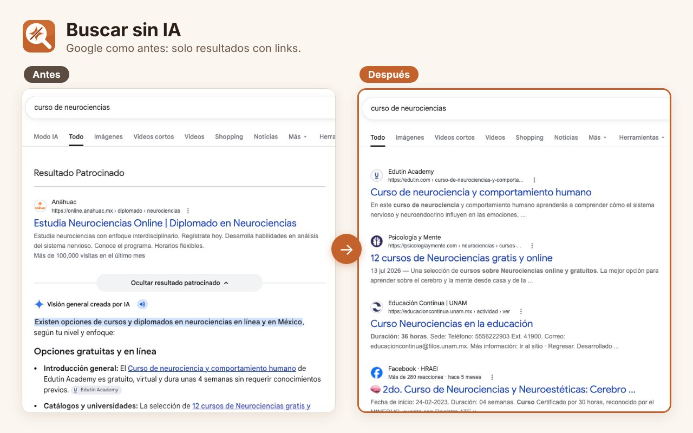
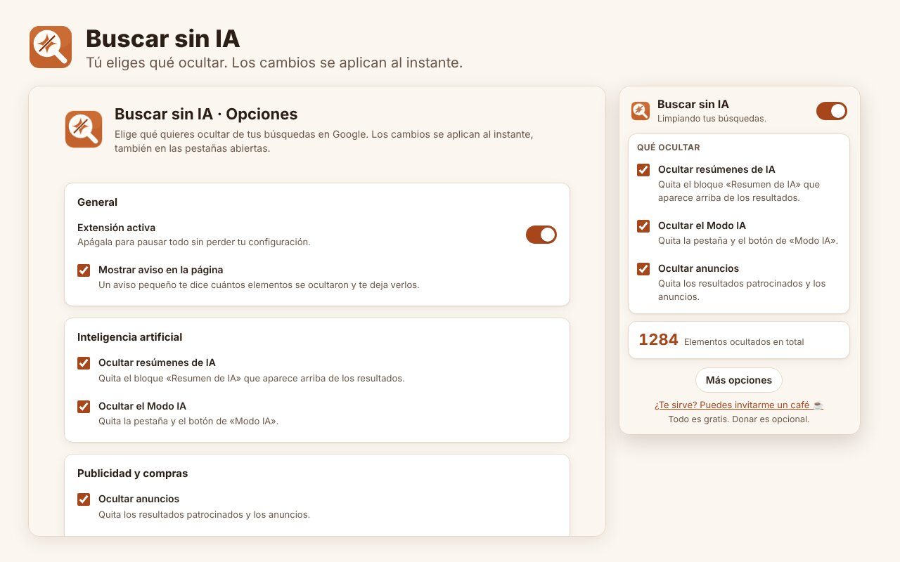

Quita la IA de Google y vuelve a ver solo links
Buscar sin IA es una extensión gratuita para Chrome que oculta el resumen de IA, el Modo IA, los anuncios y otros recuadros de Google. Tú eliges qué ocultar.
- 100 % gratis
- Sin rastreo
- Sin cuentas
- Código público

Qué puedes ocultar
Cada opción se activa o se desactiva con una casilla. Los cambios se aplican al instante, sin recargar.
Inteligencia artificial
- Resumen de IA activado
- Pestaña y botón de «Modo IA» activado
Publicidad y compras
- Anuncios y resultados patrocinados activado
- Cuadrículas y carruseles de productos
Otras secciones de Google
- «Otras preguntas» / «Más preguntas»
- Videos y videos cortos
- Imágenes entre los resultados
- Mapas y negocios cercanos
- «Debates y foros»
- «También se buscó»
Y además
- Tu lista de sitios bloqueados (por ejemplo, pinterest.com)
- Modo «Solo Web»
- Filtro «solo contenido anterior a la IA»
- Un interruptor para pausar todo
Así de fácil
- Instálala en Chrome. Ya viene lista: oculta el resumen de IA, el Modo IA y los anuncios.
- Busca en Google como siempre. Abajo a la izquierda verás cuántos elementos se ocultaron.
- Ajusta lo que quieras desde el ícono de la barra o en «Más opciones».

Tu privacidad, primero
- No recopila, no envía y no vende ningún dato.
- No hace peticiones a internet, no tiene analítica y no carga código externo.
- Solo lee la página de resultados de Google en tu navegador, lo necesario para ocultar lo que elegiste.
- Tus opciones se guardan con la sincronización de Chrome. El contador queda solo en tu navegador.
- El código es público: cualquiera puede revisarlo en GitHub.
Preguntas frecuentes
Inteligencia artificial
¿Cómo quito el resumen de IA de Google?
Instala la extensión gratuita Buscar sin IA en Chrome. Desde ese momento, el bloque «Resumen de IA», «Vista creada con IA» o «Visión general creada por IA» deja de aparecer en tus búsquedas de Google, y el resto de los resultados se queda igual.
¿Cómo quito el «Modo IA» de Google?
Buscar sin IA oculta la pestaña «Modo IA» de la barra de pestañas y su botón junto a la caja de búsqueda. Viene activado desde el inicio.
¿Se puede desactivar la IA de Google sin instalar nada?
Google no tiene un botón para apagarla. Puedes elegir la pestaña «Web» en cada búsqueda o crear un buscador personalizado con el parámetro udm=14. Buscar sin IA lo hace automático y te deja elegir qué ocultar.
Anuncios y compras
¿Cómo quito los anuncios de Google?
Buscar sin IA oculta los anuncios y los resultados patrocinados («Patrocinado», «Resultado patrocinado») de arriba y de abajo de la página de resultados. Viene activado desde el inicio, así que solo ves los resultados normales.
¿Es un bloqueador de anuncios como AdBlock o uBlock?
No exactamente. Buscar sin IA solo limpia la página de resultados de Google: no bloquea anuncios en otros sitios web ni en YouTube. Tampoco bloquea conexiones: solo oculta lo que no quieres ver. Si ya usas un bloqueador de anuncios, puedes usar las dos a la vez.
¿Puedo ocultar los productos, precios y tiendas de los resultados?
Sí. Activa «Ocultar bloques de compras» y desaparecen las cuadrículas y carruseles de productos con precios, aunque no tengan título. La pestaña «Shopping» de Google sigue funcionando normal por si quieres comprar algo.
Otras secciones de Google
¿Cómo quito «Otras preguntas de los usuarios» o «Más preguntas»?
Activa «Ocultar «Otras preguntas de los usuarios»» en las opciones. La lista de preguntas desplegables desaparece y los resultados suben.
¿Puedo ocultar los videos, las imágenes y los mapas de Google?
Sí, cada uno por separado: carruseles de videos y videos cortos, recuadros de imágenes entre los resultados, y el bloque «Sitios» con el mapa y los negocios cercanos. Las pestañas «Videos» e «Imágenes» y Google Maps siguen funcionando.
¿Cómo quito «También se buscó» o las búsquedas relacionadas?
Activa «Ocultar «También se buscó»». Desaparecen las sugerencias del final de la página y el recuadro «La gente también busca» que aparece debajo de un resultado al volver atrás. La paginación se queda.
¿Cómo quito «Debates y foros» o los resultados de Reddit?
La opción «Ocultar «Debates y foros»» quita el bloque de conversaciones de Reddit, Quora y otros foros. Si además no quieres ver los resultados normales de Reddit, agrega reddit.com a tus sitios bloqueados.
Sitios bloqueados
¿Puedo bloquear sitios como Pinterest en los resultados de Google?
Sí. En «Mis sitios bloqueados» escribe el dominio, por ejemplo pinterest.com, y sus resultados desaparecen de tus búsquedas, incluidos los de sus subdominios (es.pinterest.com, ar.pinterest.com…). Puedes agregar hasta 300 sitios y quitarlos cuando quieras.
Opciones avanzadas
¿Qué es el modo «Solo Web» (udm=14)?
Abre tus búsquedas directamente en la vista «Web» de Google, que muestra solo resultados con links. Para eso agrega udm=14 a la dirección de la búsqueda. Este modo también quita otros paneles, como la ficha de información o el clima. Imágenes, Noticias, Videos, Maps y Shopping siguen igual. Viene apagado.
¿Puedo ver solo páginas anteriores a la IA, por ejemplo de antes de 2023?
Sí. La opción «Solo contenido anterior a la IA» agrega a tus búsquedas el filtro de fecha de Google para mostrar páginas publicadas antes del día que elijas (de inicio, el 1 de enero de 2023). Google estima la fecha de cada página, así que puede no ser exacto. Viene apagada.
Uso, privacidad y compatibilidad
¿Buscar sin IA es gratis?
Sí, es 100 % gratis: sin versión premium, sin funciones bloqueadas y sin anuncios. Las donaciones son opcionales.
¿Recopila mis datos o mis búsquedas?
No. No recopila, no envía y no vende ningún dato, no hace peticiones a internet y no tiene analítica. Solo lee la página de resultados de Google en tu navegador para ocultar lo que elegiste.
¿Puedo ver lo que se ocultó o pausar la extensión?
Sí. En la página de Google aparece un aviso pequeño, «Se ocultaron N elementos · Mostrar», que te deja ver lo oculto, marcado con un borde punteado. Y con el interruptor del ícono de la barra pausas todo al instante sin perder tu configuración.
¿Mi configuración se guarda en todas mis computadoras?
Si usas la sincronización de Chrome, tus opciones y tus sitios bloqueados se guardan en tu cuenta y aparecen en tus otras computadoras. También puedes exportarlos a un archivo e importarlos en otro navegador.
¿Funciona con Google de mi país?
Sí. Funciona en más de 40 dominios de Google, como google.com, google.com.mx, google.es, google.com.ar, google.com.co, google.cl, google.com.pe y google.com.br, con Google en español, inglés o portugués.
¿Funciona en Edge, Brave u Opera?
Esos navegadores están basados en Chrome y aceptan sus extensiones, así que debería funcionar, aunque está probada en Chrome. Solo actúa cuando buscas en Google.
¿Funciona en el celular?
No. Chrome para Android y para iPhone no admite extensiones. Funciona en Chrome de computadora.
¿Qué pasa si Google cambia su página?
Google cambia su página seguido. La extensión se revisa cada mes y se actualiza cuando hace falta. Si algo deja de ocultarse, puedes reportarlo desde el link «Reportar un problema» de las opciones.
¿En qué se diferencia de otras extensiones?
Está pensada primero en español, no solo quita la IA (también anuncios, compras y otras secciones), te deja elegir qué ocultar una por una, incluye una lista de sitios bloqueados, no rastrea nada y su código es público en GitHub.
Instalar
Chrome Web Store: muy pronto. La extensión está en revisión.
Mientras tanto, puedes instalarla a mano:
- Descarga el proyecto: descargar .zip.
- Descomprímelo y guarda la carpeta en un lugar fijo, por ejemplo en Documentos.
- En Chrome, abre
chrome://extensionsy activa Modo de desarrollador (arriba a la derecha). - Pulsa Cargar extensión sin empaquetar y elige la carpeta que tiene el archivo
manifest.json. - Fija el ícono con la chincheta, en el menú de la pieza de rompecabezas.
No borres ni muevas la carpeta después: Chrome la usa desde ahí.